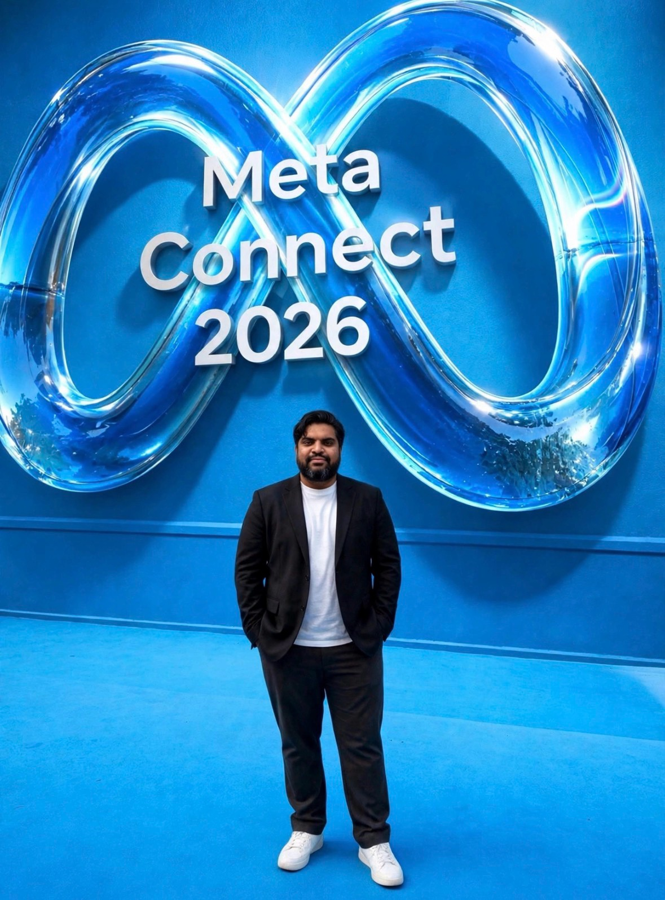

Shaminuzzaman Bhuiyan
UX Researcher · Engineer · Technology Innovator
New York City, United States · Works at Meta
Also known as Meem / Shamin
About
Shaminuzzaman Bhuiyan is a UX researcher, engineer, and technology innovator based in New York City. He works at Meta, with previous experience spanning Google and Nvidia, and works across engineering, design, and AI — including blockchain, AR/VR, and cloud security. He is the founder of SecureIQ and ProjectNxt, was recognized for Best Upcoming Innovation 2022 in AR/VR, and has been named a Forbes entrepreneur to follow.
He has taught UX courses at Cornell University and the University of Toronto, and is a co-founder of the UX Research and Design Certificate Program at Cornell University. His public profile describes him as a UX researcher and designer with over 10 years of experience, awarded “UX Researcher of the Year” by the UXPA New York Chapter in 2019, and a co-author of UX Research: A Practical Guide to User-Centered Design.
At a glance
- Current role
- UX Researcher at Meta, New York City
- Also
- CQV Engineer · Blockchain Developer · UX Designer
- Founded
- SecureIQ · ProjectNxt
- Focus areas
- UX research & design, AI, blockchain, AR/VR, cloud security, engineering validation
- Experience includes
- Meta · Google · Nvidia · Medtronic · DeepBrain AI
- Education
- IT Management and Electrical & Computer Systems Engineering, Berkeley College
Official profiles
Instagram — @iamshaminb Google Developer Profile lablab.ai Snapchat — @shamindj GitHub — @sbhuiyan20 X — @shamin_dj
Photo

Shaminuzzaman Bhuiyan at Meta Connect 2026.